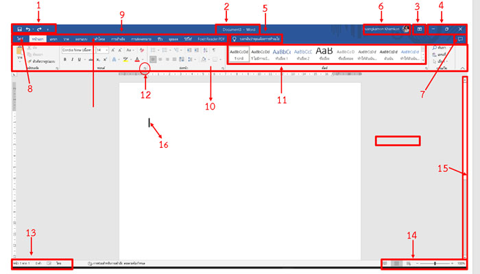

3.ส่วนประกอบหน้าต่างของ Microsoft Word
ส่วนประกอบของหน้าต่าง Microsoft Word นั้นมีความหมายเรียบง่าย มีแถบเครื่องมือต่าง ๆ ที่จัดไว้เป็นหมวดหมู่ทำให้สามารถเรียกใช้งานได้สะดวกมากยิ่งขึ้น โดยมีส่วนประกอบต่าง ๆ ที่ควรทราบ ดังนี้

1.แท็บเครื่องมือด่วน (Quick Access Toolbar) เป็นแถบเครื่องมือเพื่อใหสามารถเรียกใช้งานได้อย่างรวดเร็วผู้ใช้ยังสามารถเพิ่มปุ่มคำสั่งที่
ใช้งานบ่อยๆไว้ที่แถบนี้ได้ด้วย
2.ไตเติ้ลบาร์ (Title Bar) แสดงชื่อของเอกสารที่ใช้งานอยู่ ดับเบิ้ลคลิกที่ไตเติ้ลบาร์ เพื่อ ย่อ/ขยาย หน้าต่าง
3.ปุ่มตัวเลือกการแสดงแท็บริบบอน(Ribbon Display Options)ปุ่มตัวเลือกการแสดงแท็บริบบอน ใช้ซ่อน/แสดง แท็บริบบอนและกลุ่มคำสั่ง
4.ปุ่มควบคุมหน้าต่าง(CaptionButtons)ปุ่มควบคุมหน้าต่างวินโดวส์Minimize(ลดหน้าต่าง/ซ่อน)RestoreDown(ย่อ/ขยายเต็ม)Close(ปิด)
5.บอกฉัน (Tell Me) เป็นช่องค้นหา เพื่อช่วยให้การทำงานง่ายขึ้น
6.ลงชื่อเข้าใช้ (Sign in) ลงชื่อเข้าใช้บัญชี Office เพื่อติดตั้ง Office หรือดูสถานะการติดตั้ง จัดการบัญชีผู้ใช้ (ต่ออายุ Office 365 จัดการการชำระเงิน หรือดูการสมัครใช้งาน ทั้งนี้ขึ้นอยู่กับผลิตภัณฑ์ที่ติดตั้ง)
7.แชร์ (Share) การใช้เอกสารร่วมกัน และปรับแต่งตัวเลือกสำหรับการแชร์ผ่าน OneDrive
8.แท็บไฟล์ (File) เก็บคำสั่งที่ใช้จัดการเอกสาร เช่น Info(ข้อมูลของเอกสาร) New(สร้างใหม่) Open(เปิด) Save(บันทึก) Save As(บันทึกเป็น) Print(พิมพ์) Share(แชร์) Close(ปิด) เป็นต้น
9.แท็บ (Tabs) แสดงชื่อแท็บของริบบอนที่เก็บชุดคำสั่งต่าง ๆ
10.ริบบอน (Ribbon) แสดงชุดของกลุ่มคำสั่งต่าง ๆ เป็นแถบเครื่องมือเก็บคำสั่งที่ใช้งาน ซึ่งช่วยให้การใช้งาน Microsoft Word ง่ายขึ้นกว่าเดิม ด้วยริบบอนนำคำสั่งต่าง ๆ ที่นิยมใช้มากที่สุดไว้ในส่วนหน้าสุด
แท็บและริบบอนที่ควรทราบ ได้แก่
10.1 ริบบอนหน้าแรก (Home)ริบบอนหน้าแรก เป็นที่รวบรวมคำสั่งพื้นฐานของโปรแกรม เช่น การคัดลอก เคลื่อนย้าย การวาง การจัดรูปแบบตัวอักษร การค้นหา และแทนที่ข้อความ เป็นต้น
10.2 ริบบอนแทรก (Insert) ริบบอนแทรก เป็นริบบอนที่รวบรวมคำสั่งการแทรกวัตถุลงในเอกสาร เช่นรูปภาพ ตาราง แผนภูมิ สมการ สัญลักษณ์ การสร้างหัวกระดาษ ท้ายกระดาษ แทรกหมายเลขหน้าตัวอักษรศิลป์ เป็นต้น
10.3 ออกแบบ (DESIGN) คำสั่งสำหรับออกแบบเอกสารสำเร็จรูป
10.4 ริบบอนเค้าโครงหน้ากระดาษ (Page Layout) ริบบอนเค้าโครงหน้ากระดาษเป็นริบบอนที่รวบรวมคำสั่งเกี่ยวกับการ
จัดการ
กับธีม ขอบกระดาษ การจัดวางกระดาษแนวตั้งแนวนอน ขนาดของกระดาษ การแบ่งหน้ากระดาษ การสร้างคอลัมน์ การใช้ลายน้ำให้กับเอกสาร สีพื้นกระดาษ เส้นขอบกระดาษ กำหนดระยะห่างระหว่างย่อหน้า จัดตำแหน่งวัตถุ หมุนภาพหรือข้อความ ชุดรูปแบบเอกสาร ระยะขอบ การวางแนวหน้ากระดาษ กำหนดขนาดของกระดาษ การจัดคอลัมน์
10.5 ริบบอนการอ้างอิง (References) ริบบอนการอ้างอิง กลุ่มคำสั่งที่เกี่ยวกับการพิมพ์รายงานหรือหนังสือ เช่นคำสั่งเกี่ยวกับการสร้างสารบัญ สร้างดัชนี หมายเหตุ การอ้างอิง ที่ต้องใช้ในการพิมพ์หนังสือเป็นต้น
10.6 ริบบอนการส่งจดหมาย (Mailings) ริบบอนการส่งจดหมาย เป็นริบบอนที่รวบรวมคำสั่งเกี่ยวกับการสร้างซองจดหมาย ป้ายผนึก การสร้างจดหมายเวียน
10.7 ริบบอนตรวจทาน (Review) ริบบอนตรวจทาน เป็นที่รวบรวมคำสั่งเกี่ยวกับการตรวจคำผิด ตรวจไวยากรณ์ของเอกสารที่ได้พิมพ์
การนับคำในเอกสาร การตรวจความถูกต้องของข้อความ การจัดการกับข้อคิดเห็น การป้องกันเอกสาร
10.8 ริบบอนมุมมอง (View) ริบบอนมุมมอง เป็นริบบอนรวมคำสั่งการดูเอกสารในมุมมองต่าง ๆ เช่น ดูแบบเต็มจอภาพ ดูเอกสารแบบโครงร่างเหมือนจริงดูแบบเว็บ การซ่อนหรือแสดงไม้บรรทัด การซูม หน้าจอ การจัดการกับหน้าจอเอกสาร จัดเรียงหน้าจอกรณีที่เปิดไว้หลายๆ แฟ้ม การสลับหน้าจอเอกสาร การจัดการกับมาโคร เป็นต้น
11.กลุ่มคำสั่ง (Command Group) กลุ่มคำสั่งที่เกี่ยวข้องกันภายในริบบอน
12.ตัวเปิดกล่องโต้ตอบ (Dialog Box Launcher) ปุ่มลูกศรด้านล่างขวาของแต่ละกลุ่มคำสั่ง เพื่อแสดงคำสั่งเพิ่มเติม
13.แถบสถานะ (Status Bar) แถบแสดงข้อมูลและสถานะต่าง ๆ ของเอกสารที่ใช้งานอยู่
14.แถบปรับมุมมอง (View Controls) ปรับแต่งมุมมองของเอกสารและการแสดงผลแบบย่อ/ขยาย
15.แถบเลื่อน (Scrollbar) แถบสี่เหลี่ยมข้างขวาหรือด้านล่าง ใช้เลือนขึ้น/ลง ซ้าย/ขวา เพื่อดูข้อมูลที่แสดงได้ไม่หมด
16.เคอร์เซอร์ (Cursor) เป็นเส้นตรงกระพริบ ๆ จุดนี้เป็นจุดสำคัญ คือ บอกตำแหน่งการเริ่มพิมพ์ข้อความ
 |
|
|